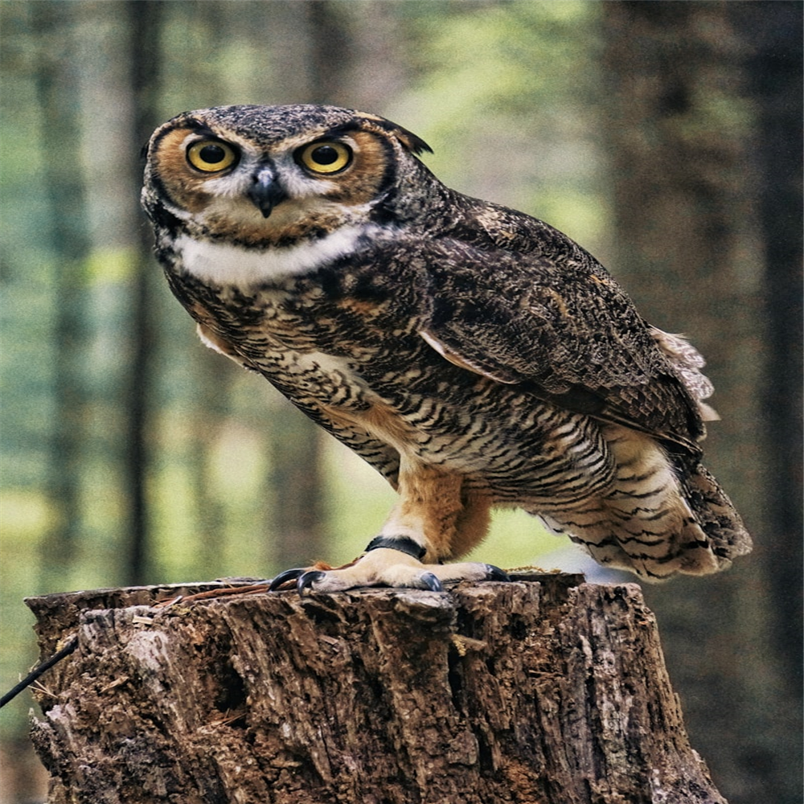

Atividade 3
Voltar para a página inicial
Conteúdos Praticados
- Criação de links entre páginas
- Configuração de Favicon personalizado
- Criação de listas
- Imagem dinâmica com picture e source
Imagem Dinâmica
O navegador seleciona automaticamente a imagem correspondente de acordo com a largura da tela:

Imagem: Baixar coruja — Freepik.com.br